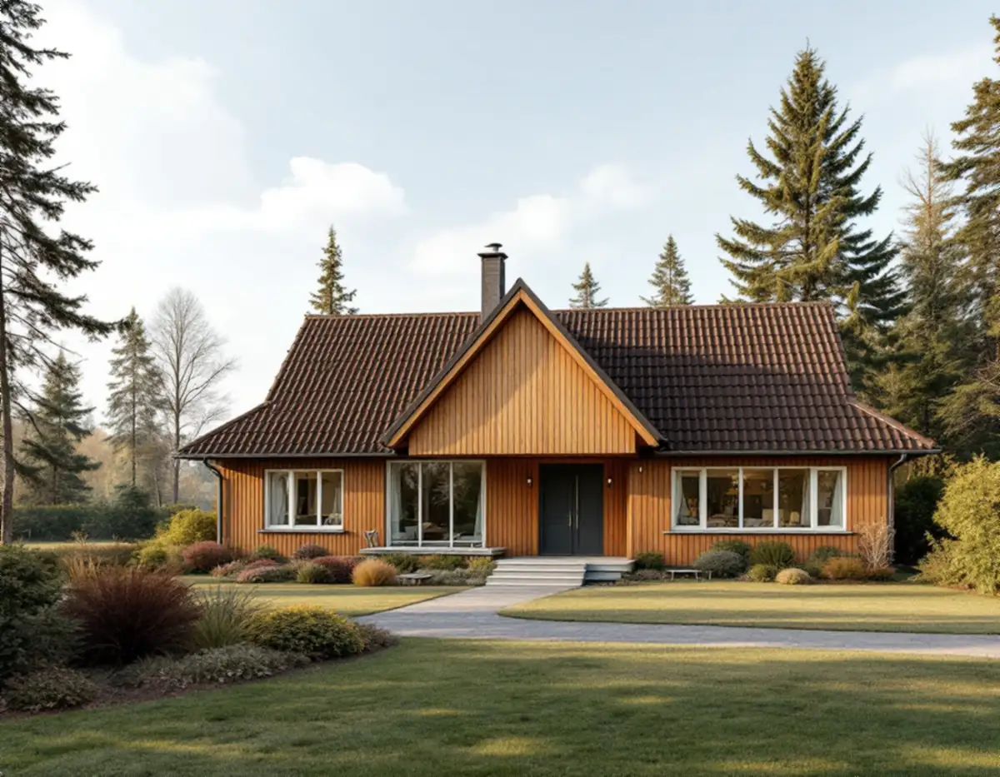
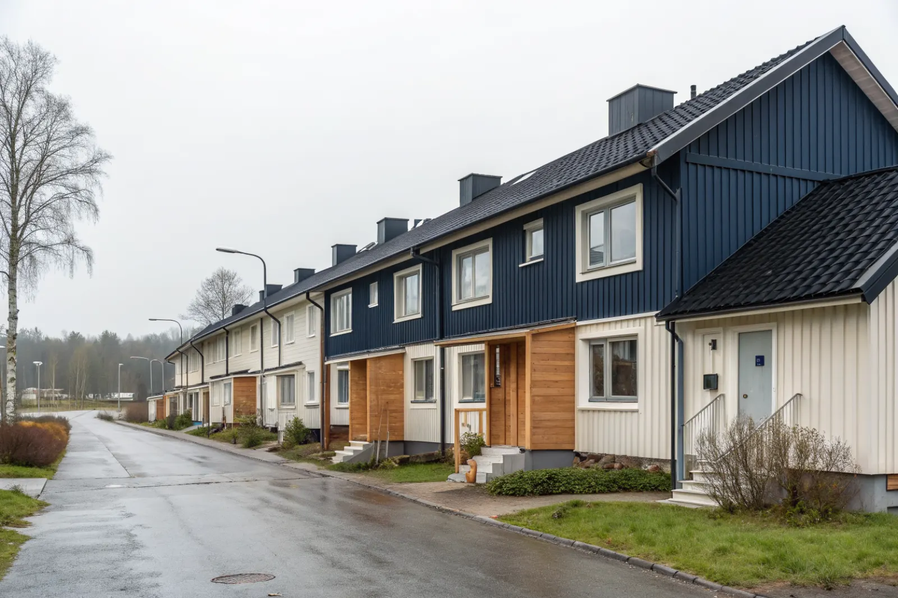
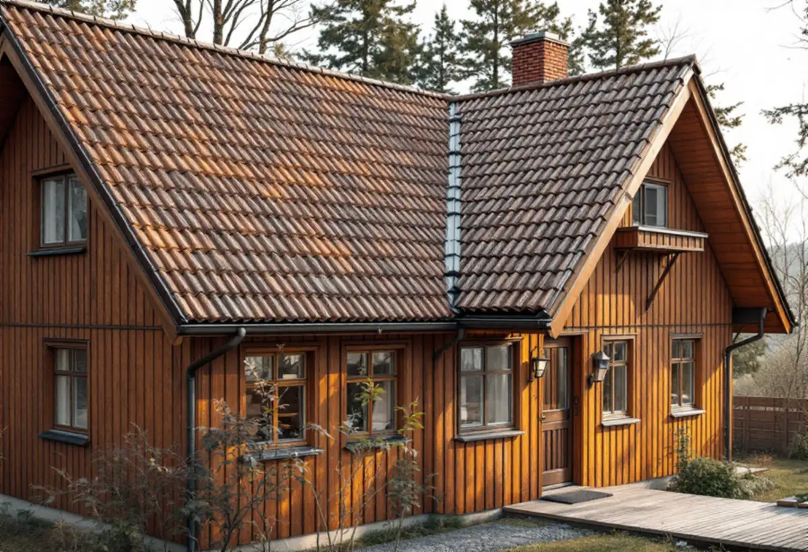

Takbyte i Täby
Byte av tegel-, betong- och plåttak.
Takbyte i Täby →
Täby nordost om Stockholm är ett av regionens största villaområden.
Skicka gärna en bild på taket.
Något blev fel. Kontrollera uppgifterna eller ring 08 12 410 276.
Vi tittar på jobbet på plats innan du får offert.
Du ser vad som ingår och vad det kostar.
Vi drar av ROT direkt och sköter ansökan.
Geal Entreprenad AB, Bromma. Org.nr 559303-7566.
Vi är takläggare i Täby för villor i bland annat Näsbypark, Gribbylund, Viggbyholm och Roslags-Näsby.
Täby nordost om Stockholm är ett av regionens största villaområden, med stadsdelar som Näsbypark, Gribbylund, Viggbyholm, Roslags-Näsby och Skarpäng. Bebyggelsen spänner från äldre, påkostade villor till moderna hus, vilket ställer olika krav på takarbetet.
I Näsbypark och Viggbyholm finns många större, arkitektoniskt påkostade villor där takets uttryck och detaljer är viktiga – valmade tak, takkupor och synlig plåt kräver erfarenhet och noggrant hantverk. I nyare områden som Gribbylund och Arninge är taken ofta enklare men med moderna materialkrav.
Vi anpassar alltid material och lösningar efter husets karaktär och ålder, och lägger stor vikt vid täta anslutningar och snygga plåtdetaljer. Täby når vi smidigt och vi planerar projekten efter husets stil och läge.
Oavsett om du behöver ett komplett takbyte eller en riktad renovering ger vi en tydlig bedömning och offert. Vi arbetar även i grannområden – se alla områden vi arbetar i.


Täby växte snabbt under 1960–70-talet, och många villor och radhus i Näsby Park, Ensta och Hägernäs är från den tiden, medan Gribbylund mest byggdes ut på 1970- och 80-talet. Betongpannor och papptak dominerar, och underlagspappen är nu ofta i slutet av sin livslängd.
Näsby Park har även äldre villor från 1920-talet med tegeltak. Nära Stora Värtan i Hägernäs och Näsby Park är taken mer utsatta för vind, vilket ställer krav på infästning av pannor, nock och plåtdetaljer.
Många radhusområden i Täby förvaltas av samfälligheter med egna regler för tak och kulör. Kontrollera vad som gäller innan du väljer material – vi hjälper dig med underlag till föreningen.
Även byte till plåt eller ny kulör kräver normalt inget bygglov för villor och radhus sedan 1 december 2025. Undantag är hus med skyddsbestämmelser – stäm av med Täby kommun om du är osäker.
På villor med betongpannor där pannorna fortfarande är hela räcker ofta en takomläggning: nytt underlag och ny läkt, samma pannor. Har pannorna börjat vittra blir ett takbyte med nya pannor eller ett plåttak mer lönsamt i längden.
För radhus lämnar vi offert per hus eller för hela längan, så att plåt och anslutningar mellan husen görs om i samma omgång. Vill du först veta vad taket behöver bokar du en takbesiktning, och vad ett nytt tak kan kosta går vi igenom i vad kostar ett takbyte.
Från villorna i Näsbypark och Viggbyholm till typhusen i Gribbylund – så planerar du en renovering av taket i Täby, steg för steg, på sidan om takrenovering i Täby.
Byte av tegel-, betong- och plåttak.
Takbyte i Täby →Riktade åtgärder som förlänger takets liv.
Takrenovering i Täby →Bedömning av skick inför beslut.
Takbesiktning i Täby →Nytt ytskydd på plåttak.
Takmålning i Täby →Skonsam tvätt och mossbehandling.
Taktvätt i Täby →Nytt plåttak och plåtarbeten.
Plåttak i Täby →Vi utgår från Bromma och når Täby snabbt. Det gör att vi kan komma ut på besiktning utan långa väntetider och hålla nära kontakt genom hela projektet.
Läs mer om tak på villa eller jämför takbyte och takrenovering innan du bestämmer dig.
Vi arbetar även i Danderyd.
Takläggare i Danderyd →Vi arbetar även i Sollentuna.
Takläggare i Sollentuna →Vi arbetar även på Lidingö.
Takläggare på Lidingö →Vi arbetar även i Solna.
Takläggare i Solna →Vi arbetar även i Vallentuna.
Takläggare i Vallentuna →Vi arbetar även i Österåker.
Takläggare i Österåker →Eller ring 08 12 410 276, mån–fre 08–17.
Skicka gärna en bild på taket.
Något blev fel. Kontrollera uppgifterna eller ring 08 12 410 276.